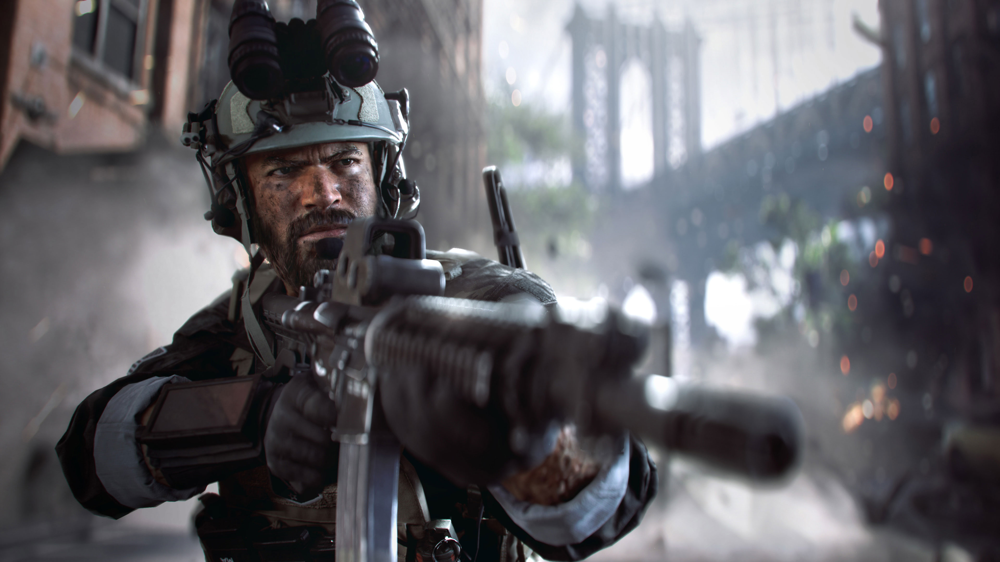
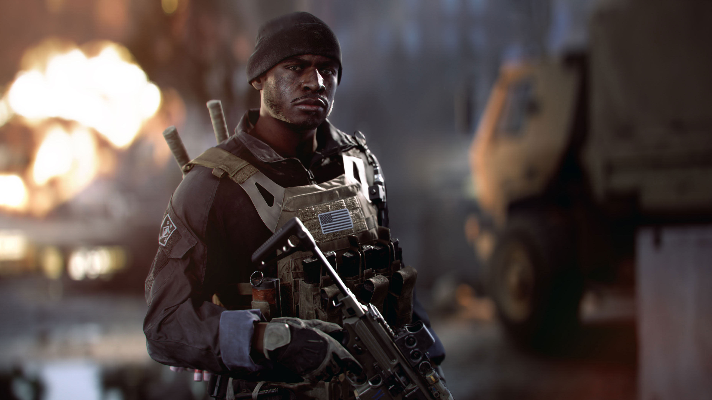
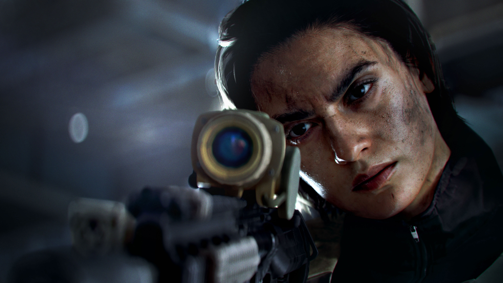
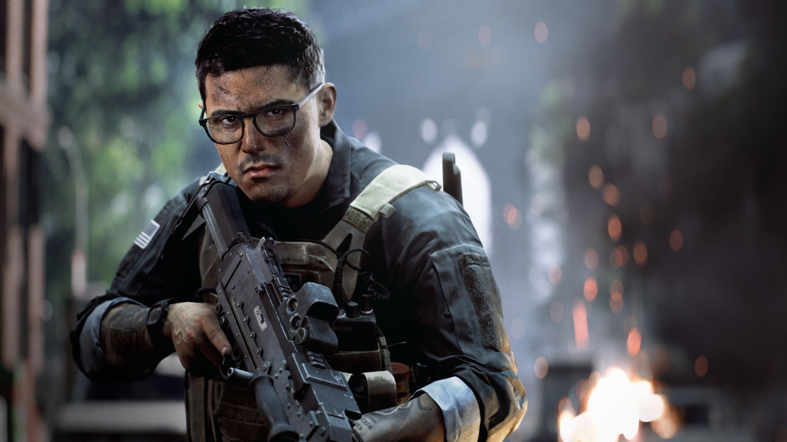
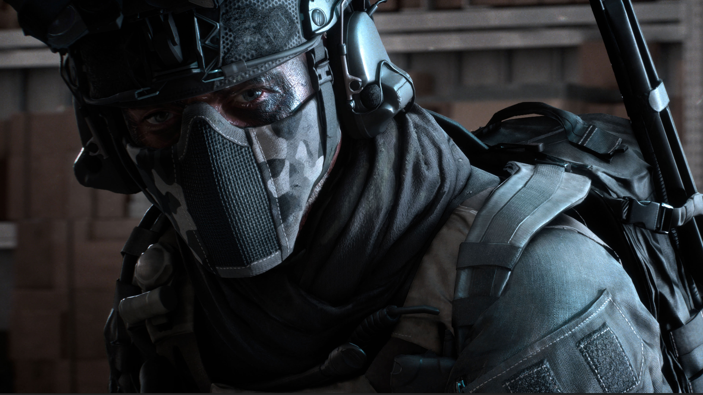

All-out warfare
Det som skiller Battlefield fra mange andre skytespill er størrelsen på kampene. Målet er å gjenskape følelsen av et fullskala slag, der infanteri, tanks og fly kjemper samtidig på samme kart. Det gir rom for mange ulike spillestiler – du kan storme fram, reparere kjøretøy eller støtte laget fra avstand.
Historien i Battlefield 6
I kampanjen følger vi Dagger 1-3, en amerikansk militærgruppe. De kjemper mot Pax Armata, et privat militærselskap som vil endre maktbalansen i verden. Samtidig står NATO i fare for å falle fra hverandre.
Du spiller som ulike medlemmer av gruppa. Oppdragene tar deg blant annet til Gibraltar, Brooklyn og Egypt. Her handler det både om kampene og om hvordan soldatene samarbeider når oppdragene blir vanskelige.
Kilde: EA – om kampanjen og Dagger 1-3.
Møt personene
Disse fem personene blir vi kjent med i kampanjen. De har ulik bakgrunn og forskjellige roller.

Haz Carter
Lagleder / Assault
Carter leder Dagger 1-3. Han spilte amerikansk fotball på skolen, men valgte en annen vei. Erfaring med friluftsliv og overlevelse ble nyttig i militæret.

Dylan Murphy
Engineer
Murphy valgte frontlinjen framfor en karriere som offiser. Han er modig og tenker taktisk. I gruppa har han rollen som Engineer.

Simone «Gecko» Espina
Recon
Gecko er det nyeste medlemmet i gruppa. Hun lærte å jakte på bestefarens gård. Nå bruker hun erfaringen sin som gruppas Recon og vil vise hva hun kan.

Cliff Lopez
Support
Foreldrene ønsket at Lopez skulle studere medisin. Selv valgte han militæret og et liv med mer eventyr. Han har rollen som Support i Dagger 1-3.

Lucas Hemlock
CIA-operatør
Hemlock jobber for CIA. Mye av fortiden hans er hemmelig. Han er villig til å gå langt for landet sitt.
Tekstgrunnlag: EAs presentasjon av personene. Bilder: EA / Battlefield, fra den offisielle kampanjesiden. Lest 20. oktober 2026.
Klasser
Spillerne deles inn i klasser, og hver klasse har sitt eget utstyr og sin egen rolle på laget.
| Klasse | Rolle |
|---|---|
| Assault | Frontlinjen – angrep og storming |
| Engineer | Bekjempe kjøretøy og reparere lagets kjøretøy |
| Support | Forsyninger, helbreding og gjenoppliving |
| Recon | Rekognosering og presisjonsskyting |
Maps og ødeleggelse
Maps er bygget for både nærkamp og kamp over store avstander. En viktig del av serien er ødeleggbare objekter: vegger og bygninger kan rase sammen, og det endrer hvordan en kamp utvikler seg. Det gjør at samme kart kan føles annerledes fra runde til runde.
Spillmoduser
- Conquest – to lag kjemper om kontrollpunkter på kartet.
- Breakthrough – angriperne presser seg gjennom forsvarets soner.
- Rush – ett lag angriper og ødelegger mål, mens det andre forsvarer dem.
Kilder til klasser og spillmoduser: EA – Classes og EA Help – Game modes. Om ødeleggelse og lagspill: EA – New Player Guide. Lest 20. oktober 2026.
Merk: Dette er en fanside laget som skoleprosjekt. For offisiell og oppdatert informasjon, se nettsidene til EA.